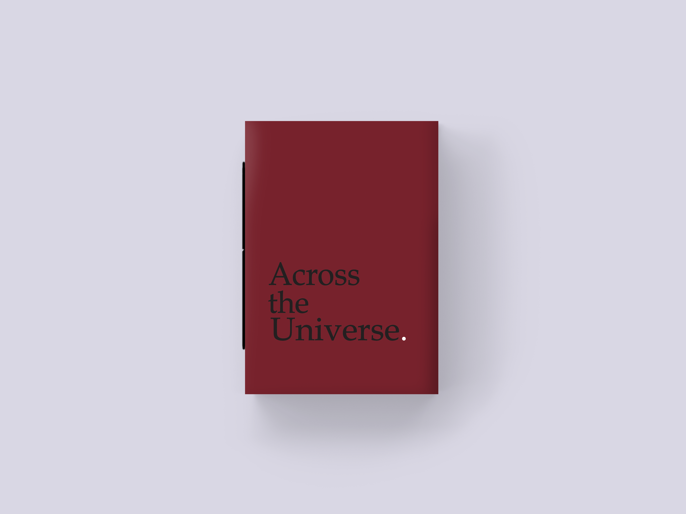

my universe
projeto desenvolvido por: Giulia Golfari para a disciplina Produção Gráfica
o álbum Across the Universe, foi talvez o projeto mais emocionante que já fiz.
com algumas fotos feitas em uma câmera analógica há 19 anos atrás, Across the
Universe é um álbum de 8 páginas que junta momentos simples e crus, do maior
amor que existe: o de mãe e filha. costurando simples momentos, com as músicas
que mais nos marcaram dos Beatles, a simples diagramação do álbum trouxe
muitas emoções e uma nostalgia muito grande, me fazendo chorar durante todo o
seu processo. e porque Across the Universe? através do nosso pequeno universo
de amor, minha infância ao lado da minha mãe foi a melhor infância que eu poderia
ter.



trazendo para um universo infantil,
foram criadas exclusivas ilustrações digitais
para cada conto da coletânea, seguindo uma estética
com cores chapas e desenhos mais próximos do público infantil.
foram criadas exclusivas ilustrações digitais
para cada conto da coletânea, seguindo uma estética
com cores chapas e desenhos mais próximos do público infantil.